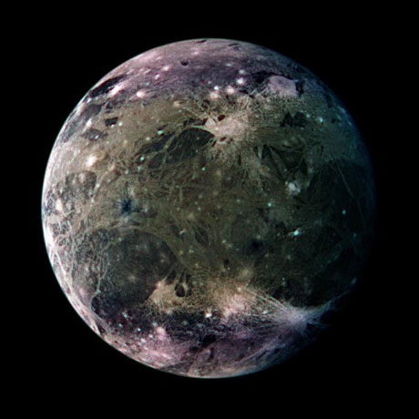

| Cette page est actuellement en cours de construction. Son auteur travaille à l'améliorer. |
| L'Administration | |
|---|---|
 | |
| Statut | Planète mère et centre administratif et économique de l'Idorion Corporation. Son dirigeant est le très fortuné Idorion |
| Coordonnées | 3.1.13.4.1 |
| Surface émergée | 99.9% |
| Capitale: | Secteur Delta prime |
| Cycle annuel | 284 jours standars |
| Cycle journalier | 18 heures (mais on y travaille 24 heures par jour afin de respecter la norme galactique |
| Population | Plus de 10 milliards d'habitants |
| Lune(s) | 0 naturelles, 5 artificielles |
| Espèces répertoriées | 70% d'Humains dont 69 % de prolétaires et 1 % de Kapitalistes, 29% Réplicants légers, 1% Réplicant d'élite. |
| Langue officielle | Administratien, Langue Galactique. |

Martha ! Ca vient ce foutu dossier 14 sur l'affaire ClearSky non de dieu !
De sa voix nasillarde celle-ci ne put réprimer un :
Hé gros tas si ça te plait pas t'as qu'à venir le chercher maintenant ! sinon ben t'as qu'à attendre comme tout le monde et te coller un Holodésine là ou je pense !
Driiiinnggg Driiiingg !
Allo, ici le service des renseignements du bloc 24-x, secteur 5, portique 8, département Bébé.
Que puis-je pour vous ?
Comment ça : si vous êtes bien sûr l'Administration ?!Mais vous vous foutez de qui mon vieux ! Y'a des gens qui bossent ici 'savez ?
Quoi comment ? Répétez un peu pour voir ! Oh et puis merde !
Clack
Timy apporte moi mes pillules s'il te plait mon chéri. Maman commence à ne plus pouvoir tenir.
Le Communicateur s'alluma soudainement laissant passer une voix forte et stressante.
MAaaRtha ! Ces putains de dossier ! MAINTENANT !
Une journée de travail sur l'Administration.